NR 218
Data Storage
- We store data in computer-readable format in files
- Sometimes files store data as text (often called human readable files)
- Other times data is stored in a way only a program will understand (binary file)
- Even the human readable files are ultimately stored as 1s and 0s (more on that)

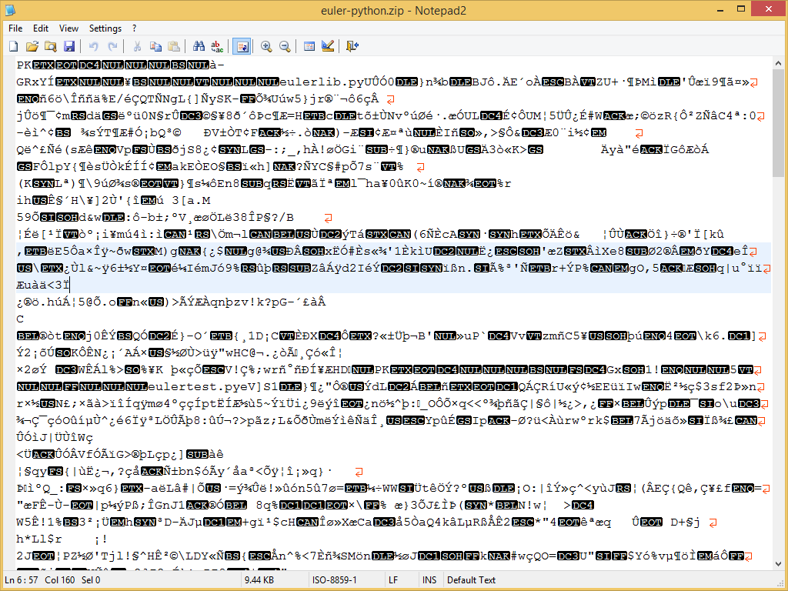
Data Storage
- We store data in computer-readable format in files
- Sometimes files store data as text (often called human readable files)
- Other times there are just 1s and 0s (binary file)
- Even the human readable files are ultimately stored as 1s and 0s (more on that)
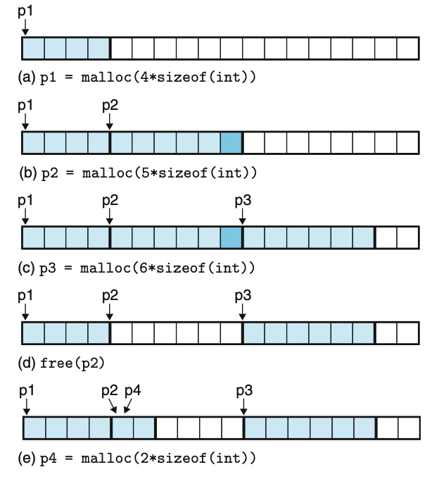
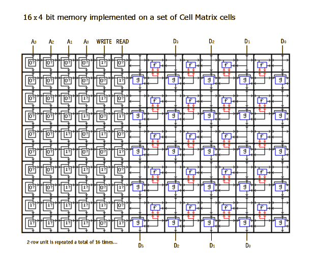
File Organization and Computer Hygiene
Be kind to your future self - keep your files organized:
- Use directories (a.k.a folders)
- Use descriptive names:
- e.g.
slo_county_26910.geojsonnotcounty.geojson
- e.g.
- Don’t put spaces in file or directory names (see this)

Why use GIS
Monitor and understand our planet

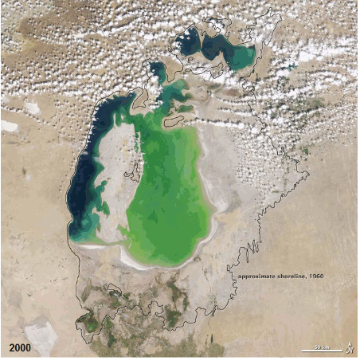
Planning
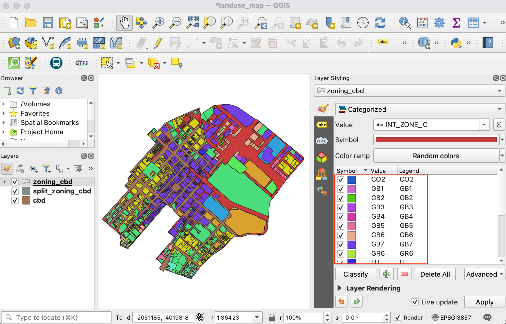
Disaster Response
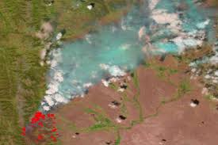
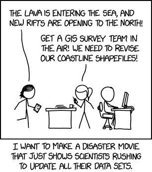
Map Conventions
Mapping conventions facilitate effective conveyance of information. In most cases using them is a good idea (but not necessarily always)

The Blue Marble photograph in its original orientation.
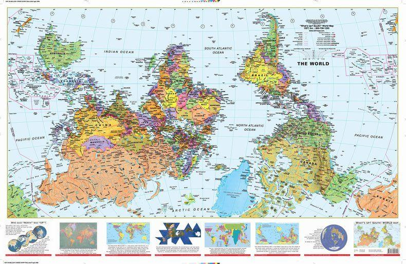
South’s up!
DMS to DD conversion
Degrees can be written in degrees-minutes-seconds (DMS) or in decimal degrees (DD).
128° 40’ 52.0428” W
128° 40’ 52.0428” W
128° 40’ 52.0428” W
128° 40’ 52.0428” W
128° 40’ 52.0428” W

128
128 + (40 / 60)
128 + (40 / 60) + ( 52.0428 / 60\(^{2}\) )
-128.68112299
The negative is important! SLO vs. off the coast of Shandong
Spheroids and Geoids
The geoid is pretty complex…
so the surface is approximated using a spheroid (also called an ellipsoid of revolution)
A GCS is based on a reference model of the Earth, usually a sphere or spheroid (ellipsoid)

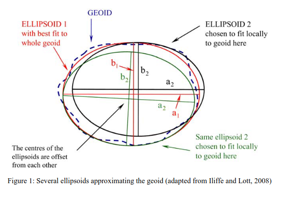
Datums
- A datum is a spheroid with an origen point and orientation aligning it for a particular use.

Image Source: Manny Gimond
- A local datum matches a geoid to an ellipsoid to fit a local context, e.g.
- NAD27 (North American Datum of 1927) is widely used in the U.S., especially in older maps.
- ED50 (European Datum of 1950) is common in Western Europe.
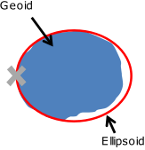
Image Source: Manny Gimond
- A geocentric datum aligns the centroid of the geoid to the center of the ellipsoid
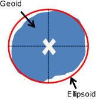
Image Source: Manny Gimond
- Common datums used in North America
| Datum | Type | Typical use in North America |
|---|---|---|
| NAD27 | Local | Legacy U.S., Mexico, and Central America maps |
| NAD83 | Regional geocentric* | Standard for most modern U.S. and Canadian mapping |
| NAD83 (2011) | Regional geocentric | High-accuracy modern U.S. realization of NAD83 |
| WGS84 | Global geocentric | GPS and global web mapping |
* NAD83 is Earth-centered in concept, but regionally realized and not identical to a fully global geocentric frame.
Projections
- Mathematical transform for transforming 3D Earth to 2D map
- i.e. project the latitude and longitude to x any coordinates on a plane
- There are infinite ways to do this, they all cause distortion

Projections
Imagine a lightbulb inside of the earth, shining out and projecting the shadows of the continents onto a developable surface (flattenable surface).
There are three commonly used developable surfaces
- plane
- cone
- cylinder
- The developable surface can be oriented in many ways.
- Each developable surface can be in one of two cases tangent and secant
- The aspect of the projection is the orientation of the developable surface relative to the axis of the earth
Tissot’s indicatrix
Shows linear, angular, and areal distortions of mapsEquidistant projections
- Maintains distance between points in one direction (usually north-south)
- Angles and shapes are not preserved
- Good for small-scale maps that cover large areas
- Often used for global thematic maps
Conformal map projections
- Preserve angles (also known as bearings) between locations
- Used for navigational purposes
- Areas tend to be quite distorted
- Shapes are more or less preserved over small areas, at small scales areas become wildly distorted
- e.g. Mercator projection (with normal aspect) is famous for distorting Greenland
Equal area or equivalent projections
- Preserve area
- Distort angles
Weird projections
- Often made as compromises between types of distortion
- Like the Waterman Butterfly
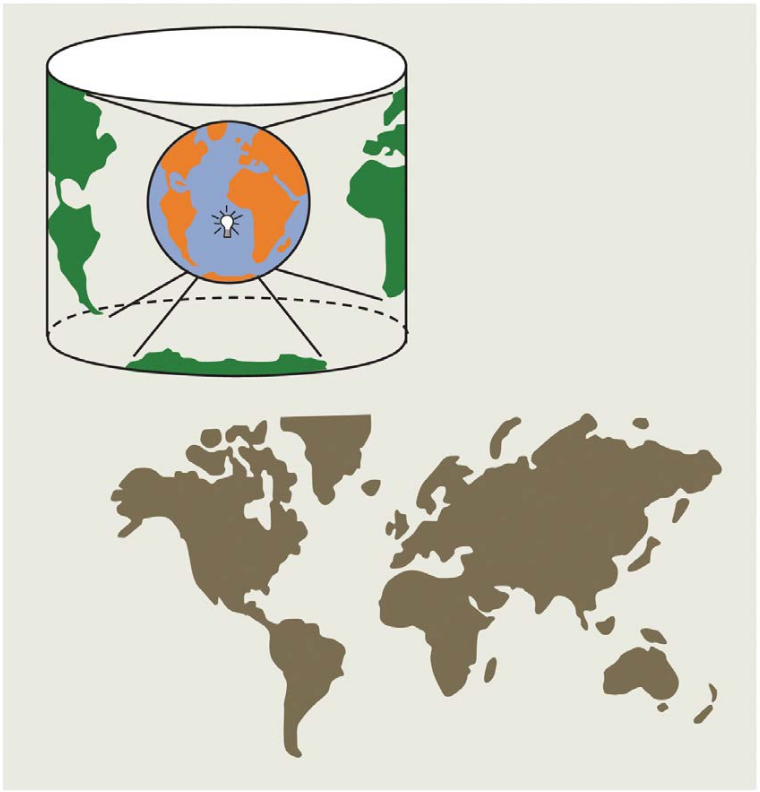
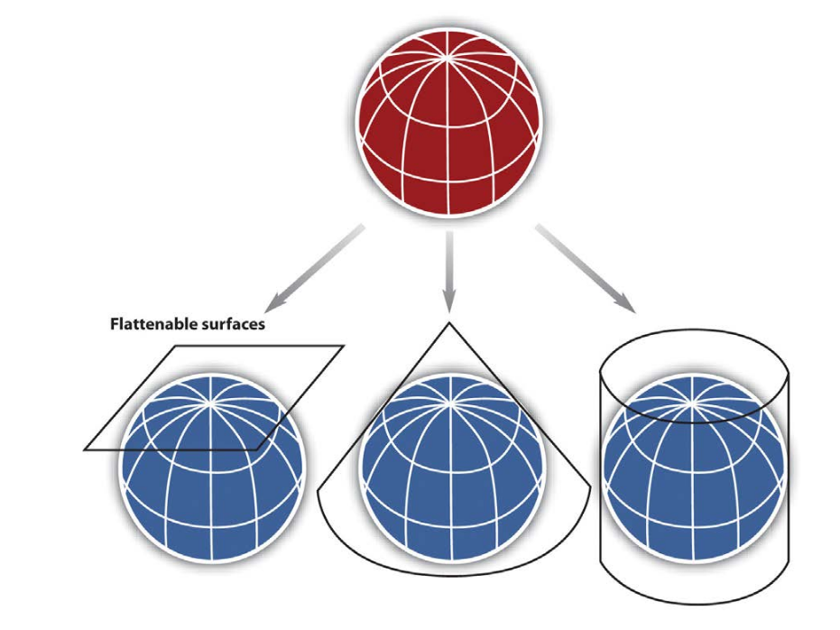
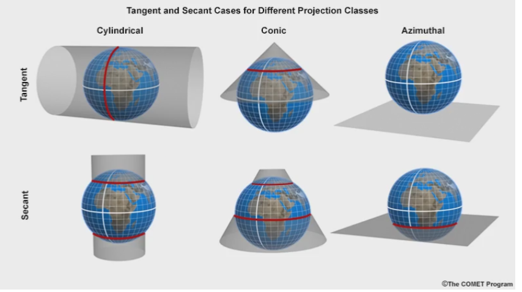
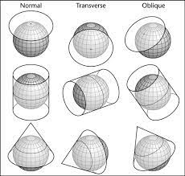
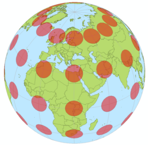
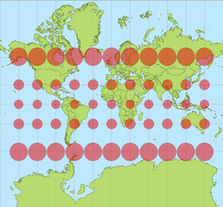
Left: circles of equal area on globe. Right: same circles on Mercator projection.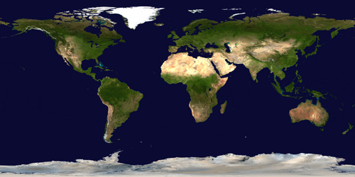
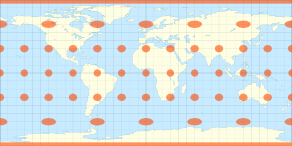
Top: True-color satellite image of Earth in equirectangular projection.Bottom: Equirectangular projection with Tissot’s indicatrix.
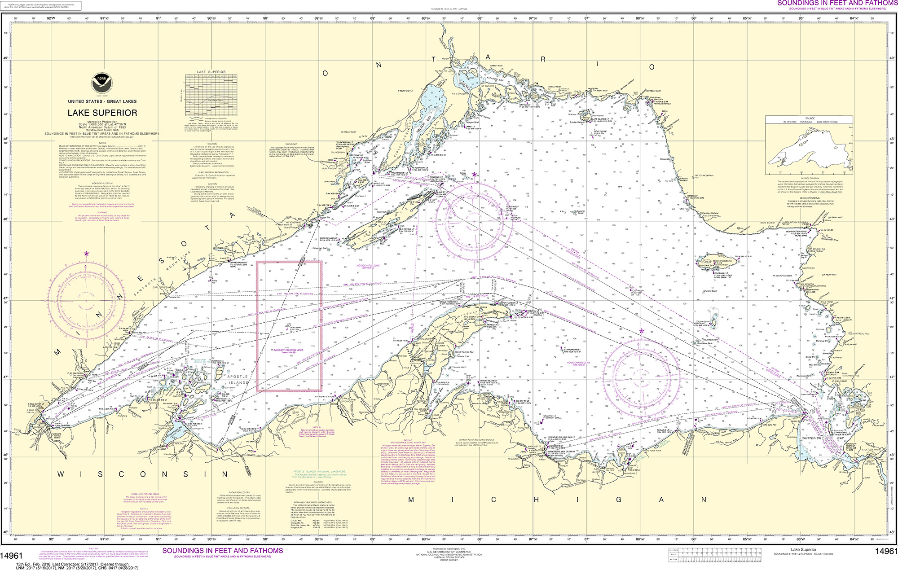
Top: Nautical Chart of Lake Superior in Mercator projection. Bottom: Mercator projection.
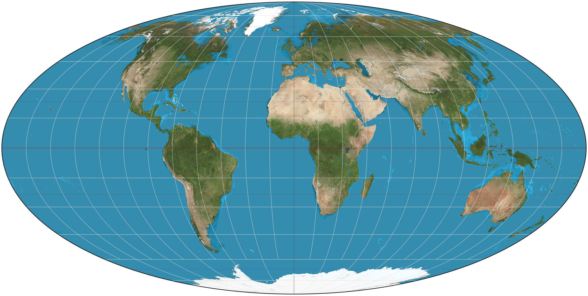
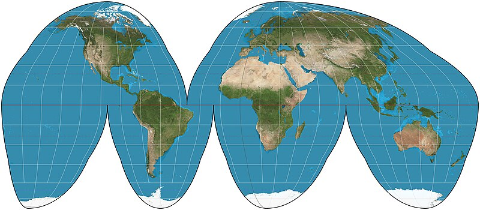
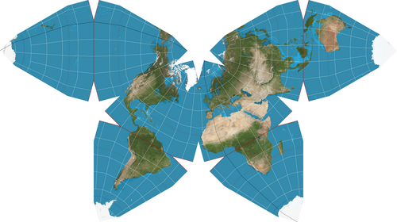

- Download
SPR_data.ziphere (right-click and “save link as”) - Extract the file (Linux, Windows, Mac), and place in appropriate file location (Remember, organize your files!)
- Open QGIS
Boolean data
- Boolean data is either True or False (Can also be thought of as 1 or 0)
- Theoretically, it can be stored as 1 bit, but in practice it is generally stored as a byte (8 bits) because hardware usually addresses hardware by byte, so writing individual bits is complex

String data
- String data contains characters.
- Strings can be stored with different encodings. The more characters exist in the encoding set, the more memory the characters require.
Levels of Measurement
- Nominal - Names or identifiers of objects
- Ordinal - Ranked categories based on a measure
- Ratio - have a 0 value that indicates absence of the quantity of interest
- Interval - have a regular scale, but not a meaningful 0 value
Nominal and ordinal data are types of categorical data
- Nominal - Names or identifiers of objects
e.g. Land Cover: “Oak Woodland”, “Grassland”, “Forest”, etc…
- Ordinal - Ranked categories based on a measure
e.g. Fire Hazard: “Low”, “Medium”, “High”
Ratio and interval data can be continuous or discrete
Ratio - Multiplication makes sense, e.g. 200 K is twice as hot as 100 K \[ 2 \times 100 \mathrm{K} = 200 \mathrm{K} \]
Interval - Multiplication does not make sense, e.g. 200°C is not twice as hot as 100°C \[
2 \times 100°\mathrm{C} \neq 200°\mathrm{C}
\] 
Image Source: wikimedia
Geospatial Data Types: Vector vs. Raster

Vector Data
- Can be described by points, lines, polygons
- Ex: roads, rivers, train tracks, hiking trails, sidewalks, building footprints, county boundaries
- NOT images, do NOT contain any pixels
- The kind of data we’ve been working with so far

- Often stored as tabular data files with geographic metadata
- Points, lines, and polygons represent the spatial features
- Topology describes the connectivity, area definition, and contiguity of interrelated points, lines, and polygon

Points
- Zero-dimensional objects containing a single coordinate pair.
- Ex: Lat, Lon (sometimes elevation) coordinates denoting a city, building, address, etc
- X,Y (,Z) coordinates on a Cartesian plane (or Euclidean space)
Lines
- One-dimensional objects composed of multiple, explicitly connected points.
- Lines have the property of length.
- Also called an “arc.”
Polygons
- Two-dimensional features created by multiple lines to create a “closed” feature.
- First point on the first line segment is the same as the last point on the last line.
- Can represent city boundaries, buildings, lakes, soils, etc.
- Have the properties of area and perimeter.
Structuring Vector Data
- There are several ways to define relationships between vector data:
Feature based: The “Spaghetti Model”
- Each feature is a long string of coordinates
- No relationships between features
Structured: The “Topological Model”
- Enforced relationships between features

Raster Data

Raster Data
- Images, stacks of images (satellite / drone image)
- Rastrum, Latin meaning “scraper” –> Raster, German meaning “screen”
- Grids of numbers
- Things with pixels!

- Images, stacks of images (satellite / drone image)
- Rastrum, Latin meaning “scraper” –> Raster, German meaning “screen”
- Grids of numbers
- Things with pixels!

- The spatial resolution of a raster dataset represents a measure of the precision or detail of the displayed information.
- a.k.a. pixel size
- Ex: 1mm, 1cm, or 1m
- So when you hear that a camera has N megapixels - this just means it has many millions of pixels

Spatial Resolution
The spatial resolution of a raster dataset represents a measure of the precision or detail of the displayed information.

The spatial resolution of a raster dataset represents a measure of the precision or detail of the displayed information.

Spectral Resolution


Vector Data (Review)
- Can be described by points, lines, polygons
- Ex: roads, rivers, train tracks, hiking trails, sidewalks, building footprints, county boundaries
- NOT images, do NOT contain any pixels
- Often stored as tabular data files with geographic metadata
- Points, lines, and polygons represent the spatial features
- Topology describes the connectivity, area definition, and contiguity of interrelated points, lines, and polygon
Topology Checker
- Click Pluggins >Manage and Install Pluggins, type “topology che”, and check the box next to Topology Checker.
- In your toolbar the Topoly Checker button,
 , should appear. Click it.
, should appear. Click it. - Then click the Configure button,
 .
.
 , should appear. Click it.
, should appear. Click it. .
.{kind=link}
{kind=link}
{kind=link}
- Now the topology Rule settings window should be open.
- Use the dropdown menus to add rules.
- When you create a rule, you must use the plus button to add it before you close the window by hitting “OK”
- Try the following:
- meaningless_points must be inside some_f___ed_up_farm_fields
- some_f___ed_up_farm_fields must not overlap
- some_f___ed_up_farm_fields must not have gaps
- After hitting “OK” it will look like nothing has happened, because nothing has happened.
- Now, click the Validate all button,
Behold! A list of topology errors in the table. Each of which is highlighted in red on the layers involved.
If one were so inclined, one could fix these errors using the vertex tool in the Digitizing toolbar.

Image Source: NEON
Visualizing Elevation


Red Relief

Landforms

{kind=link}
{kind=link}
What kind of information is needed to segment this image?
In Lab 11 you you are asked to segment the image to find lithium brine evaporation ponds near Susques Argentina.
If you have looked at the images over a basemap, or searched for Susques on the internet, you may have learned that it is in the Atacama desert.
The Atacama, being a desert, is quite dry (actually, it is one of the driest places on Earth!).
If you happened to google lithium evaporation pond, you probably know that they are used to evaporate lithium brine in order to extract lithium salts.
Given this information, one would expect these lithium ponds to be wetter than their surroundings.


{kind=link}

{kind=link}
Segmentation using Raster Calculator
In simple cases one can use the raster calculator.
- Calculate you index.
- Calculate you index.
- Use Raster Calculator to create a binary mask of values above a threshold, e.g.
INDEX > 0 - Polyginize the results


Installing Orfeo Toolbox
In this class we will use Orfeo Toolbox, an open source remote sensing project, but there are many other options.
Go to the Orfeo Toolbox download page and click the Download OTB 9.x.x.x button.
If that link happens to be broken use this copy.
Extract the file and move the resulting folder to your home directory.
Install the Orfeo Toolbox Provider pluggin.
Install the Orfeo Toolbox Provider pluggin.
Open processing toolbox and click the settings icon

Open processing toolbox and click the settings icon
- Click the Processing tab on the left
- Click the OTB dropdown
- Check the activate box, if it exists
- Select the OTB application folder by browsing to
~/OTB.x.x.x/lib/otb/applicationsand click select folder (x.x.x is just a place holder for whatever version you have) - Set OTB folder to
~/OTB.x.x.x
You can watch this painfully slow video if you are having trouble.
Segmentation
| Band | Common name | Central wavelength (nm) | Resolution (m) | |
|---|---|---|---|---|
| B1 | Coastal aerosol | 443 | 60 | |
| B2 | Blue | 490 | 10 | |
| B3 | Green | 560 | 10 | |
| B4 | Red | 665 | 10 | |
| B5 | Red Edge 1 | 705 | 20 | |
| B6 | Red Edge 2 | 740 | 20 | |
| B7 | Red Edge 3 | 783 | 20 | |
| B8 | NIR | 842 | 10 | |
| B8A | Narrow NIR | 865 | 20 | |
| B9 | Water vapor | 945 | 60 | |
| B10 | Cirrus | 1375 | 60 | |
| B11 | SWIR 1 | 1610 | 20 | |
| B12 | SWIR 2 | 2190 | 20 |


- Using Raster Calculator, extract Band 4 from the image, (can be scratch layer, rename it NIR)
- Run Zonal Statistics using the segments and the NIR raster, calculate mean
- In the geoprocessing toolbox, find K-means clustering (ABC) under Attribute based clustering
- Run with 3 clusters, and class as the value “Fields to use for clustering”
- Dissolve the output (Clusterd Layer) based on on class

This image contains Sentinel2 bands 4, 3, 2 and 8.
- Go to Processing Toolbox > OTB > Segmentation > Segmentation
- You can run the algorithm with default settings, except you need to specify an output file (use a .shp file as output, Orfeo complains about geojson for some reason.)
- You should end up with something like this (after you adjust the symbology)

{kind=link}
TPI & Geomorphons
- Topographic Position Index (TPI) compares a cell to the mean elevation of its neighbors.
- Positive TPI marks ridges; negative TPI highlights valleys—kernel size sets the landform scale.
- Geomorphons classify landforms using multi-directional TPI, revealing patterns such as spurs, hollows, and plains.